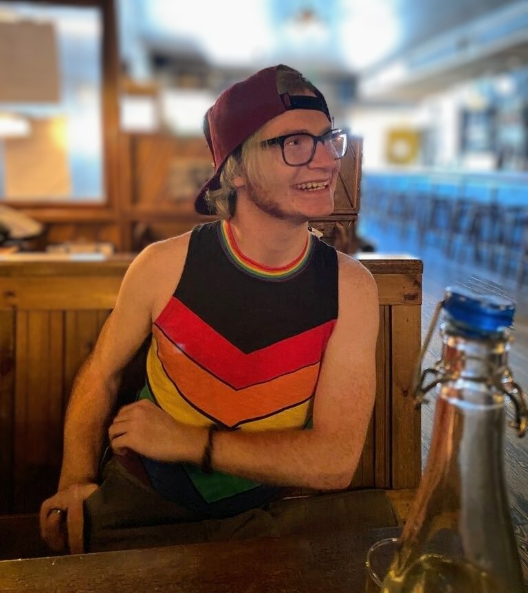

Who
My name is Gabriel Fuller, and my hobby is gaming. Recently, I have been playing Hunt Showdown (covered in later section). With a few of my friends. Online, I am known as Rockst1r or Nerdymob. I play with many different people daily, but mostly with my two closest friends.

The image above is me and my friends ready to load into a game. With a small playerbase, it may take a long time to load in, so we usually chat about what is going on in eachother's lives.
What
Recently I have been playing Hunt Showdown, "a high-stakes, tactical PvPvE first-person shooter" - Steam
This game is best described by me as a western-style zombie game where you're primary goal is to escape with your life and hopefully a reward or two.
Above is a clip of us fighting another team. Note that it is hard to aim the gun as part of the mechanics of the game. This is because the guns are based on older real-life weapons.
When
Hunt Showdown initially released February 22, 2018. Even with the game being out for 4 years, I have only been playing for roughly 1 year.
I have been playing games since I was very young. Starting on the Playstation and evolving through each generation of gaming consoles, I have landed on Xbox. Playing games at roughly 6 years old, I joined my sisters in heated arguments over the smallest of things. This helped me bond with them and create fond memories at a young age.

The lack of quality from the picture above is due to the age and device used. This picture is me with my siblings playing Fusion Frenzy 2, our most competative game when we were younger.
Where
I currently game in the dorms at UNCC on Xbox. This tends to lead to interesting situations such as the fire alarm going off during a match.

One the places you can find me out in the world is Abari. It is a bar-cade that has all sorts of pinball machines along with old arcade machines. This includes the origional Streetfighter, Mario, and even Astroids.
Why
Hunt showdown is a difficult game that takes a lot of time and practice. Why play a difficult game? I find it to be very rewarding for many reasons:
- High skill cap.
- Smaller community. This leads to each player taking the game seriously and an all around enjoyable experience.
- Intense gameplay; from great aim to panicking, this is one of few games that can get my heart pumping.

When I play Hunt Showdown, my primary goal is to have a good time with people I care about. Each game is a new bonding experience with my friends and adds new memories. This becomes more social than just being on the phone with friends or playing a game alone. With a win or loss, you have the same excitement that can come from sports fans celebrating a victory together. So in my own way, it's as if I am a pro player participating in an ever-going tournoment to prove my ability at the game.
How to improve
To improve in most things it takes patience, practice, and understanding. In videogames, you have to be consistant in how you play and when do to the variablity in different playstyles. If you can learn about the game in any form, you get a greater understanding of how the game functions and how to react in certain situations.

Difficulty of this game is seperated into brackets. These brackets are represented by stars. More stars means a higher skill of the player (usually). This graph illustrates the skill of each player and what bracket they fall into. I am currently a 5 star player (second best bracket) at the time of making this website. The average player will fall in the 4 star bracket.